PORTFOLIO
Productions récentes, en tant que preneur de son / chef opérateur du son.
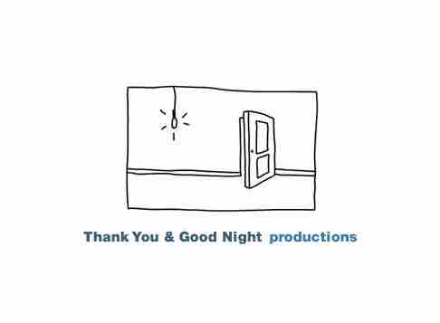
DocLab RTBF
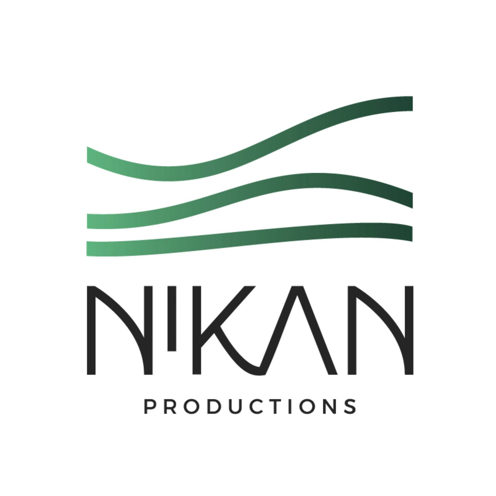
Guardians of the Land
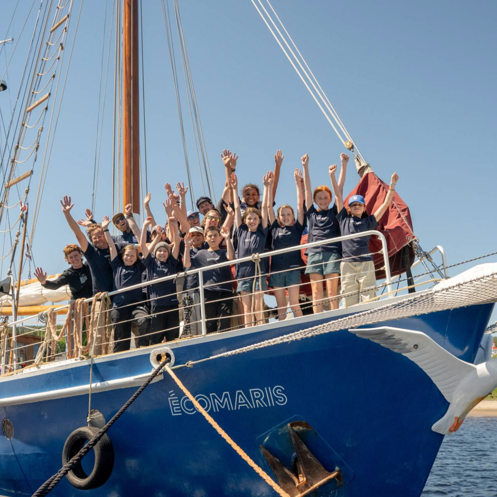
Les Enfants du Fleuve
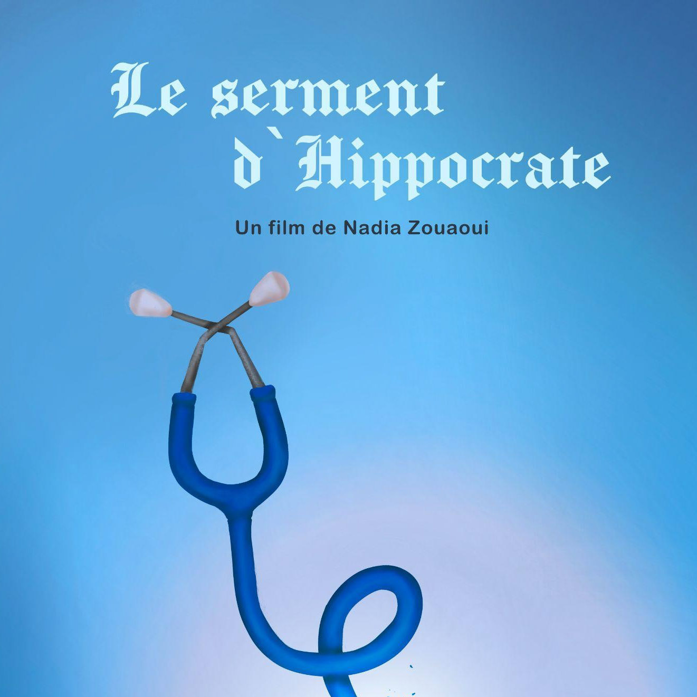
Le Serment d'Hippocrate
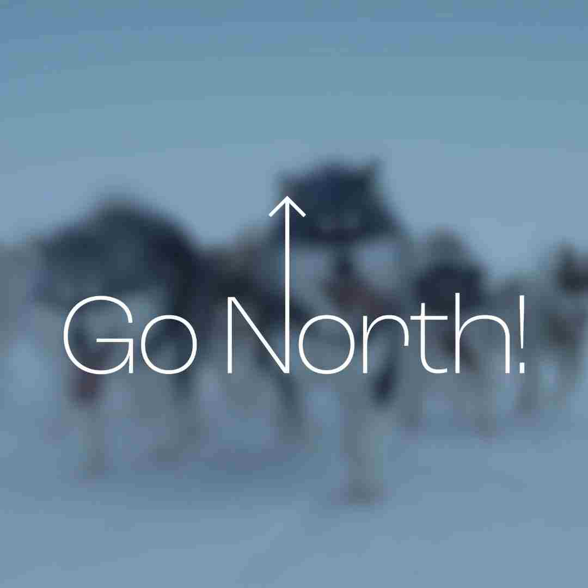
Go North
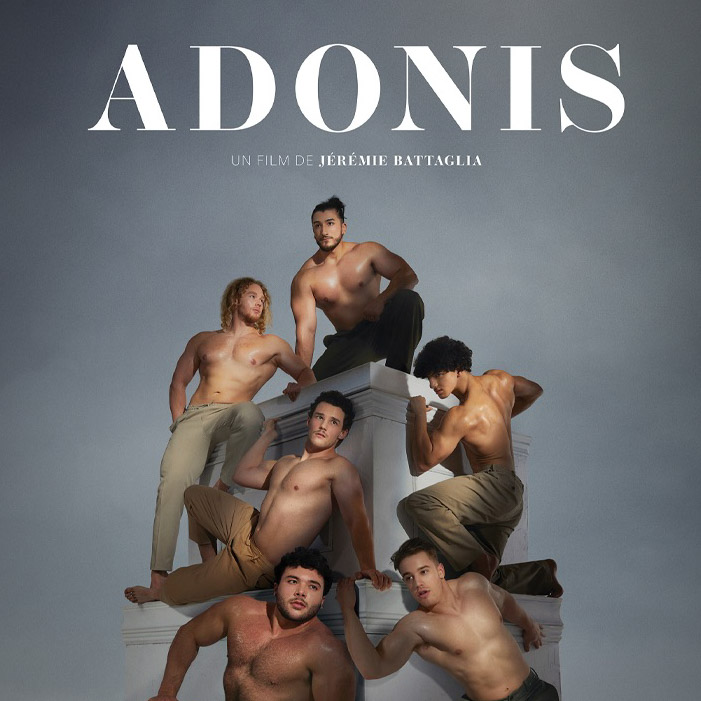
Adonis
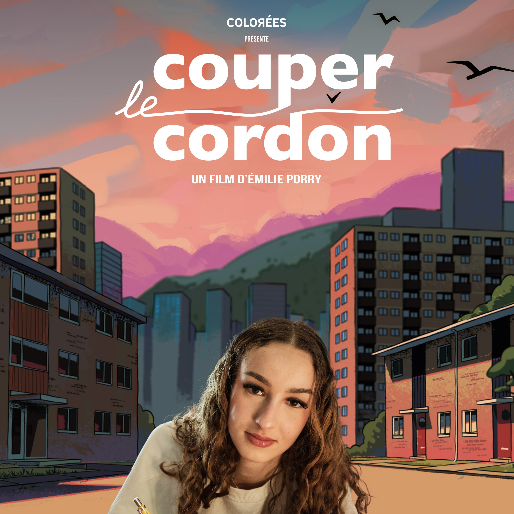
Couper le Cordon
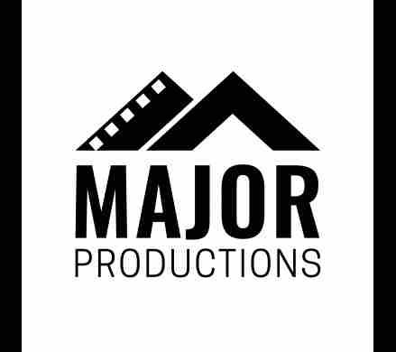
Sweetgrass
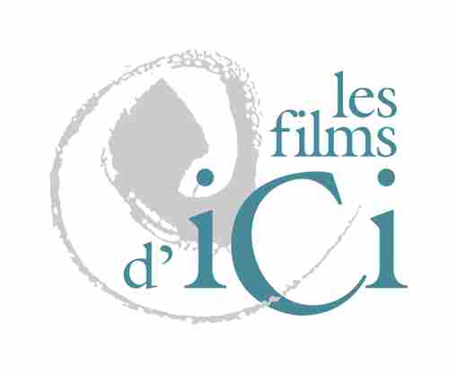
Hyperlieux
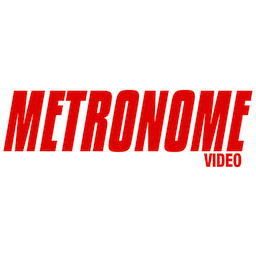
T'es refait
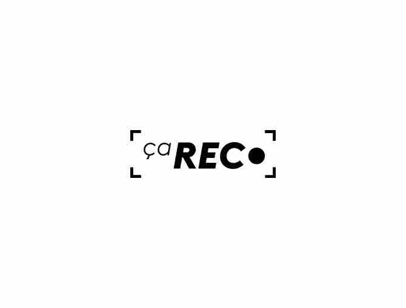
Ça rec
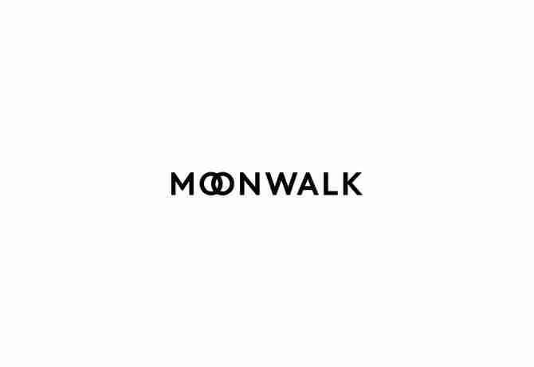